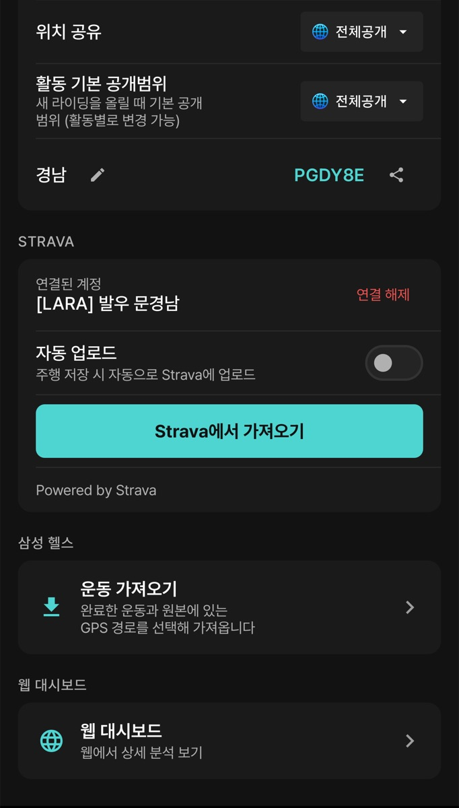

9. 연동
이 장에서 할 수 있는 것
- Strava에 기록을 자동으로 올리고, Strava의 지난 활동을 가져옵니다.
- Android 삼성 헬스, iOS Apple 건강의 운동을 가져옵니다.
- 웹 대시보드, 액션캠, 날씨 정보를 함께 씁니다.
Android 연동은 더보기 > 연결 서비스에서 시작합니다. 이 메뉴는 설정 > 계정 화면을 엽니다. iOS Strava는 설정 > 연결에 있습니다. iPhone의 더보기 > 연결 서비스는 설정 첫 화면을 엽니다(0장 대응표).

계정 > 연결 — STRAVA · 삼성 헬스 · 웹 대시보드 구역이 차례로 있습니다. 연결 해제는 누르지 않도록 주의하세요.
따라 하기: Strava
- 설정 > 계정의 STRAVA 구역에서 연결을 누르고 Strava에 로그인해 권한을 허용합니다. iOS Strava는 설정 > 연결에 있습니다.
- 연결되면 연결된 계정에 Strava 이름이 보입니다.
- 자동 업로드를 켜면 “주행 저장 시 자동으로 Strava에 업로드”합니다.
- 예전 Strava 활동을 오라이더로 가져오려면 Strava에서 가져오기를 누릅니다.
- 자동 업로드를 끈 상태에서 한 건만 올리려면 활동 상세 아래쪽의 Strava(S) 버튼(iOS Strava에 업로드)을 누릅니다. 옆의 업로드(iOS 플랫폼에 업로드) 버튼은 Strava가 아니라 오라이더 서버에 올리는 버튼입니다(5장).
| 앱에서 기록한 종목 | Strava 활동 유형 |
|---|
| 자전거 | Ride |
| 러닝 | Run |
업로드는 기록을 시작할 때 고른 종목을 따릅니다. Android Strava 업로드는 설정 > 시스템 > 데이터 절약 > Strava 업로드의 네트워크 설정(오프라인 / 셀룰러+WiFi / WiFi만)을 따르므로, WiFi만으로 두면 WiFi에 연결될 때 올라갑니다.
건강 앱 가져오기
Android 삼성 헬스
- 설정 > 계정 > 삼성 헬스 > 운동 가져오기를 엽니다.
- “완료한 운동과 원본에 있는 GPS 경로를 선택해 가져옵니다.” 가져올 운동을 고릅니다.
- 가져온 운동은 오라이더 기록 목록에 추가됩니다.
iOS Apple 건강 (헬스 연동)
- 설정 > 기록 · 연결 > 헬스 연동을 엽니다. 로그인한 상태에서만 쓸 수 있습니다.
- 건강정보 수집·이용 동의를 읽고 동의합니다. 건강정보는 민감정보라 따로 동의를 받으며, 동의하지 않아도 라이딩 기능은 그대로 씁니다.
- Apple 건강 권한 화면에서 읽기를 허용합니다. 연결하면 지난 30일까지의 운동과 GPS 경로를 가져옵니다.
- 연결을 해제하면 수집이 즉시 멈추고, 이미 가져온 활동은 남습니다.
휴대폰으로 직접 기록한 활동과 건강 앱에서 가져온 활동은 출처가 다르게 표시됩니다. 같은 운동을 양쪽에서 기록했다면 중복 여부를 확인하세요.
웹 대시보드
Android 설정 > 계정 > 웹 대시보드(“웹에서 상세 분석 보기”)를 누르면 orider.co.kr이 열립니다. 같은 계정으로 로그인하면 앱 기록이 그대로 보이고, 큰 화면에서 분석·목표·계획·경로를 관리할 수 있습니다. 자세한 사용법은 웹 설명서를 보세요.
액션캠
- 더보기 > 센서 > 센서 검색 및 연결에서 지원하는 액션캠(GoPro·DJI 지원 모델)을 찾아 등록합니다.
- 설정 > 화면 > 데이터 필드에서 캠 녹화버튼, 캠 사진, 캠 배터리 같은 필드를 넣습니다.
- 기록 중 화면에서 필드를 눌러 녹화를 시작·정지하거나 사진을 찍습니다.
장갑을 낀 손으로도 누를 수 있게 녹화 버튼 필드를 크게 배치하세요. 촬영이 실제로 됐는지는 카메라에서도 확인하세요.
날씨
- 홈 인사말 아래에 현재 기온과 바람(세기·방향)이 나옵니다.
- 경로 상세의 “출발지 7일 예보”로 출발 지점의 날씨를 미리 봅니다(6장).
- 기록 중에는 데이터 필드(현재 온도 · 풍속 · 풍향 · 강수량 · 습도)로 봅니다.
날씨는 네트워크가 필요합니다. 데이터 절약 > 날씨 정보를 오프라인으로 두거나 배터리 절약의 절약·대시보드 프리셋을 고르면 날씨가 갱신되지 않습니다. 날씨가 멈춰도 GPS 기록은 계속됩니다.
자주 막히는 점
Strava에 올라가지 않으면 ① 계정의 Strava 연결 상태 ② 데이터 절약의 Strava 업로드 설정 ③ 네트워크를 차례로 확인하세요. 그래도 안 되면 연결 해제 후 다시 연결합니다.
러닝이 Strava에 Ride로 올라갔다면 기록 시작 전에 종목이 자전거였던 것입니다. 다음 기록부터 홈의 종목 토글을 확인하세요.